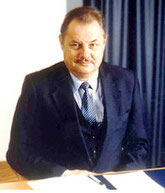
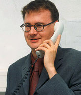

Geschichte und Entwicklung
Von der Gründung 1979 in Gaildorf bis zum heutigen Stammsitz in Wolpertshausen.

Klaus Lorenzen war seit Mitte der sechziger Jahre auf dem Gebiet der Funkentstörung und EMV tätig – zunächst als Leiter eines EMV-Labors in Stuttgart, dann als Geschäftsführer und Mitinhaber eines Herstellers induktiver Bauelemente. Dabei zeigte sich schon bald sein Gespür für praxisgerechte Entstörlösungen sowie die Konstruktion induktiver Bauelemente, die mittlerweile mehrfach patentiert werden konnten.
Von Gaildorf nach Wolpertshausen
Gründung in Gaildorf
Klaus Lorenzen macht sich selbständig und gründet die NKL GmbH. Aus kleinen Anfängen wächst die Firma schnell – bis die Produktionsfläche für über 40 Mitarbeiter zu klein wird.
Produktion im Ausland
Verlagerung der Hauptproduktion ins Ausland. 1994 entsteht dort in einer Freihandelszone ein neues Produktionsgebäude mit 1.200 qm Fläche – die Wettbewerbsfähigkeit bei großen Stückzahlen steigt erheblich.
Handelsvertreter Nord-/Ostdeutschland
Der Vertrieb wächst: Ein Handelsvertreter übernimmt ab sofort die Betreuung der Kunden in Nord- und Ostdeutschland.
ISO 9001 & Führungswechsel
Zertifizierung des Qualitätsmanagementsystems nach ISO 9001. Zum Jahresende scheidet Klaus Lorenzen altershalber aus – sein Sohn übernimmt die Geschäftsführung, Dipl.-Ing. (FH) Bernd Spatscheck erhält Prokura.

Eigener Außendienst Süddeutschland & Österreich
Zusätzlich zum Handelsvertreter im Norden baut die NKL GmbH einen eigenen Außendienst für Süddeutschland und Österreich auf.
Neubau Wolpertshausen
Da die Expansionsmöglichkeiten in Gaildorf an ihre Grenzen stoßen, beginnt Anfang 1999 der Neubau des Stammsitzes in Wolpertshausen, direkt an der Autobahn A6 Heilbronn–Nürnberg. Mitte Mai 2000 wird das neue Firmengebäude mit 1.600 qm Produktions-/Lagerfläche und 400 qm Bürofläche bezogen – inklusive neuem Messlabor mit Siemens-Messkabine.
Sibalco AG betreut die Schweiz
Für unsere Schweizer Kunden übernimmt die Sibalco AG, Basel, die Betreuung – ein kompetenter Partner für uns und unsere Kunden.